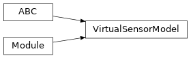

torchfilter.base._virtual_sensor_model¶
Private module; avoid importing from directly.
Module Contents¶
Classes¶
Virtual sensor base class for our differentiable Kalman filters. |
-
class
torchfilter.base._virtual_sensor_model.VirtualSensorModel(state_dim: int)[source]¶ Bases:
abc.ABC,torch.nn.ModuleVirtual sensor base class for our differentiable Kalman filters.
Maps each observation input to a predicted state and uncertainty, in the style of BackpropKF. This is often necessary for complex observation spaces like images or point clouds, where it’s not possible to learn a standard state->observation measurement model.
-
state_dim¶ Dimensionality of our state.
- Type
int
-
abstract
forward(self, *, observations: types.ObservationsTorch) → Tuple[types.StatesTorch, types.ScaleTrilTorch][source]¶ Predicts states and uncertainties from observation inputs.
Uncertainties should be lower-triangular Cholesky decompositions of covariance matrices.
- Parameters
observations (dict or torch.Tensor) – Measurement inputs. Should be either a dict of tensors or tensor of size
(N, ...).- Returns
Tuple[torch.Tensor, torch.Tensor] –
Predicted states & uncertainties. - States should have shape `(N, state_dim).` - Uncertainties should be lower triangular, and should have shape `(N, state_dim, state_dim).`
-